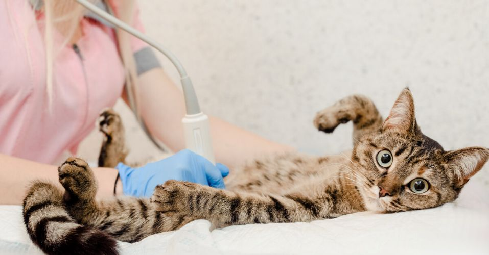

Esterilizaciones
Las hembras sin esterilizar corren mayor riesgo de desarrollar tumores de mama (cáncer
de pecho) alrededor de los 6-7 años de edad.
Comprueba con regularidad si hay algún bulto en la zona de las mamas de tu gata y, si encuentras
algo que te preocupe, habla con tu veterinario.
De igual manera, un gato no esterilizado es más propenso a sufrir algún tipo de infección
relacionada directamente con peleas o contacto con otros gatos que suelen ser portadores de virus y
bacterias como:
- Bartonella henselae: que causa la enfermedad del arañazo
- SIDA Felino
- Enfermedades virales como calicivirus
- Traumas, atropellamientos, etc.
- Abscesos que pueden dar origen a infecciones y fiebre
La esterilización de gatos permite que tu mascota tenga una vida más tranquila dentro de casa, sin la exposición a peleas, arañazos, y contacto directo con otros gatos que pudiesen presentar una enfermedad
Equipo de rescate
En el Equipo de Rescate, nuestra misión es transformar el miedo en ronroneos.
No somos solo voluntarios; somos un grupo especializado en intervención felina, preparados para actuar en situaciones críticas de abandono y maltrato.
Contamos con protocolos de captura ética y asistencia médica inmediata para asegurar que cada vida que tocamos reciba una segunda oportunidad digna
Guardianes de Siete Vidas. Mientras la ciudad duerme, nuestro equipo permanece alerta.
Desde rescates en altura hasta operativos por denuncias de maltrato, trabajamos incansablemente las 24 horas del día.
Cada reporte es una promesa de auxilio; no descansamos hasta que el último gato en peligro esté bajo el calor de un refugio seguro y el cuidado de manos expertas.
- Rescate de Emergencia: Extracción segura de gatos en situaciones de riesgo (cañerías, techos o motores).
- Unidad de Denuncia: Gestión y seguimiento legal de casos de crueldad animal.
- Primeros Auxilios: Estabilización inmediata y traslado a clínicas veterinarias de urgencia.
- Rehabilitación: Trabajo conductual para gatos ferales o traumatizados.